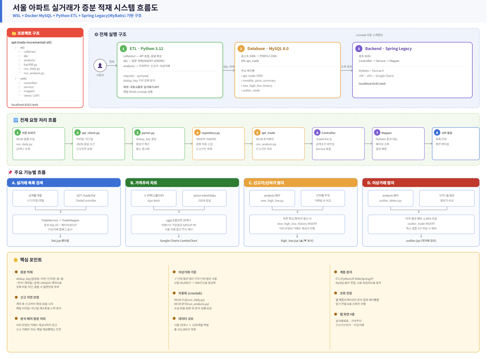

Case Study
DataETLBackend
ApartTrade ETL — 서울 아파트 실거래가 증분 적재 시스템
2026.06.19 – 2026.06.23 (5일) · 1인 프로젝트 · 기획·설계·구축·배포 전 과정 단독 수행
국토교통부 실거래가 데이터를 매일 증분 수집해 이상거래를 탐지하는 ETL 기반 부동산 데이터 분석 플랫폼입니다.
화면 캡처
프로젝트 개요
Problem
국토교통부 실거래 신고에는 최대 30일의 시차가 있어 단순 1회 수집으로는 최신 거래를 놓치고, 구 단위 평균 같은 단순 기준으로는 이상거래를 정확히 가려내기 어려웠습니다.
Solution
dedup_key 기반 증분 적재와 매일 이번달+지난달 재조회로 신고 지연을 보정하고, 단지+월 단위 평균 기준으로 전환해 이상거래 탐지 정확도를 높인 ETL 파이프라인을 구축했습니다.
핵심 성과
- ✔ 서울 25개구 × 7개월(2026.01~2026.07) 실거래 데이터 백필
- ✔ 이상거래 탐지 오탐 46,058건 → 496건으로 정상화 (구 단위 → 단지 단위 평균 기준 전환)
- ✔ crontab 기반 일별 수집(09:00)·분석(09:30) 완전 자동화
아키텍처
- Python ETL(collector·db·analysis)과 Spring Legacy 웹(Controller·Service·Mapper·JSP)이 MySQL로만 연결되어 서로 독립적으로 동작
- collector가 국토교통부 실거래가 API를 호출해 파싱하고, 실패 시 최대 3회까지 대기시간을 늘려가며 재시도(fetch_with_retry)한 뒤, dedup_key UNIQUE 제약으로 신규 건만 INSERT IGNORE 방식으로 적재
- analysis 배치가 신규 거래만 골라 신고가·신저가 갱신과 이상거래 탐지를 수행 — 이미 판정된 거래는 각각 서브쿼리(NOT IN)와 집합 체크로 걸러내 재심사하지 않아 매일 재실행해도 안전
- 웹 애플리케이션은 분석 결과 테이블(monthly_price_summary·new_high_low_history·outlier_trade)을 읽기 전용으로 조회만 수행
- crontab이 09:00 수집(run_daily.py), 09:30 분석(run_analysis.py) 순으로 자동 실행 — 수집 완료 후 30분의 여유를 둬 분석 실행을 보장

본인 역할
핵심 기여
- ✔ 1인으로 기획·설계·구축·배포 전 과정 수행 (5일)
- ✔ dedup_key(법정동+지번+단지명+동+층+전용면적+계약일+금액) 설계 및 증분 적재 파이프라인 구현
- ✔ 신고 지연(최대 30일) 분석 및 매일 이번달+지난달 재조회 보정 로직 설계
- ✔ INSERT IGNORE의 executemany가 정확한 신규/중복 건수를 반환하지 않는 걸 확인하고, 정확한 카운트 확보를 위해 건별 execute로 처리하는 트레이드오프 선택
- ✔ 이상거래 탐지 기준 설계 및 검증 (구 단위 → 단지 단위 평균 전환)
- ✔ Spring Legacy(MyBatis) 웹 화면 4종(목록·가격추이·신고가신저가·이상거래) 구현
- ✔ crontab 기반 수집·분석 파이프라인 자동화, 기획서·요구사항정의서·WBS·테이블정의서 문서화
기술 스택
Python 3.12
requests
pymysql
MySQL 8.0 (Docker)
Spring Legacy MVC
MyBatis
JSP / JSTL
Google Charts
crontab
문제 해결 과정
신고 지연 — 이번달 데이터가 왜 이렇게 적지?
🚨 문제
부동산 계약은 계약~신고까지 최대 30일의 시차가 있어, 당월에 한 번만 수집하면 실제 거래의 상당수가 누락됐습니다.
🔍 원인
신고 시점을 분석해보니 계약 당월 신고는 1,349건(0.6%), 다음달 신고는 10,098건(4.7%)에 불과했고, 나머지 205,015건(94.7%)은 2달 이후에야 신고됐습니다.
🛠 해결
매일 이번달+지난달을 함께 재조회하도록 스케줄을 설계하고, dedup_key UNIQUE 제약으로 재조회해도 중복 적재가 발생하지 않도록 했습니다.
✅ 결과
신고 지연으로 누락되던 거래를 빠짐없이 반영하는 증분 적재 구조를 완성했습니다. 서울 25개구 × 7개월치 데이터를 이 구조로 백필했습니다.
이상거래 탐지 — 비교 기준이 잘못됐다
🚨 문제
구 단위 평균 ±30% 기준은 강남구처럼 초고가·중저가 단지가 혼재된 지역에서 고가 단지가 구조적으로 이상거래로 잡히는 문제가 있었습니다 (오탐 46,058건).
🔍 원인
같은 구 안에서도 단지별 시세 차이가 매우 커서, 구 전체 평균과 비교하면 정상 거래도 평균에서 크게 벗어난 것처럼 보였습니다.
🛠 해결
비교 기준을 구 단위 평균에서 '같은 단지+같은 월 평균 평당가'로 변경하고, 표본이 3건 미만인 단지는 탐지 대상에서 제외했습니다.
✅ 결과
오탐이 46,058건에서 496건으로 크게 줄었고, 결과를 직접 열어보니 직거래·급매·가족 간 거래로 추정되는 케이스가 실제로 포함되어 있어 '이상거래'에 걸맞는 결과로 개선됐습니다.
같은 조건, 다른 세대 — 동일 세대 오판 방지
🚨 문제
같은 단지·동·층·전용면적·계약일·금액 조합이 dedup_key 상으로는 동일 거래처럼 보이지만, 실제로는 같은 층의 서로 다른 두 세대가 같은 날 같은 조건으로 거래된 경우일 수 있었습니다.
🔍 원인
국토교통부 API가 몇 호인지(호수) 정보를 제공하지 않아, 위 조합만으로는 두 세대를 구분할 방법이 없었습니다.
🛠 해결
같은 dedup_key 조합이 같은 배치 안에서 여러 번 나타나면 이를 서로 다른 세대의 거래로 간주해 _dup1, _dup2처럼 시퀀스를 붙여 별개 거래로 처리하도록 파싱 로직을 설계했습니다.
✅ 결과
호수 정보 없이도 동일 조건의 서로 다른 세대 거래가 하나로 뭉개지지 않고 각각 별도 거래로 정확히 적재되도록 했습니다.
배운 점
외부 API 데이터의 증분 적재 키를 직접 설계하면서, 무엇을 "같은 거래"로 볼 것인지를 정의하는 일이 생각보다 까다롭다는 걸 배웠습니다.
논리적으로 말이 되는 기준(구 단위 평균)도 실제 데이터에서는 전혀 다른 결과를 낼 수 있다는 걸 겪으면서, 결과가 이상하면 코드보다 기준 자체를 먼저 의심하는 습관을 얻었습니다.
ETL(Python)과 웹(Spring)을 DB로만 연결하는 단순한 구조를 택했는데, 규모가 커지면 Kafka나 Airflow 같은 도구가 필요해질 수 있다는 것도 인지하고 있습니다.